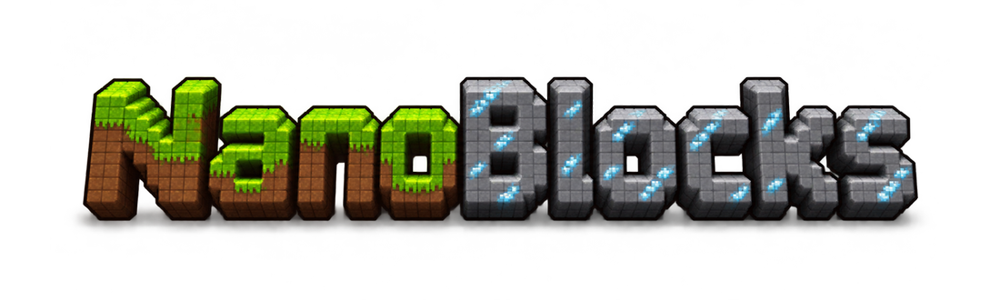

Jugar en línea muestra su dirección de red a las demás personas de la sala. La clave TURN (de Open Relay) solo ayuda a conectar cuando una red bloquea la conexión directa; si no la pone, el juego igual funciona en la mayoría de casos.
Clic para comprar o vender · Shift+clic: cinco veces · E o Esc para salir
Conserva su inventario.